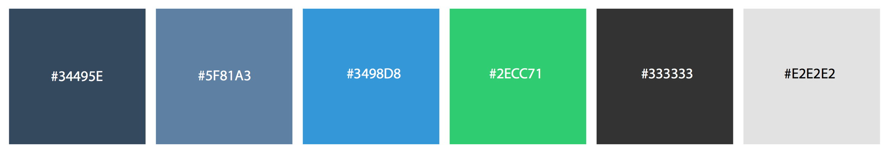
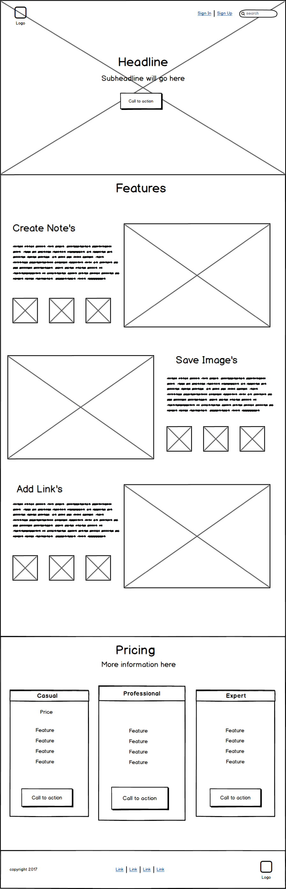
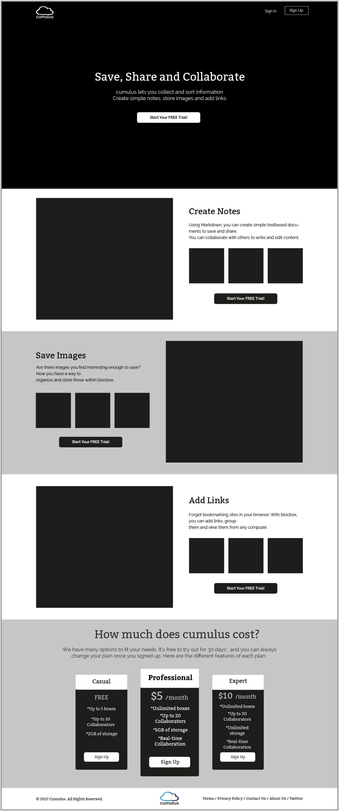

SUMMARY
Sara is a new mom struggling to balance raising her baby, working a 9-5 job and trying to build her side hustle into a business. She is smart, creative but not the most tech savy. Managing and organizing everything in her life is scattered across web browsers, note pads and applications. She dreams of the day when technology will help her organize her beautiful mess and allow her to access all her information in one place from any device at anytime. That was our goal when building Cumulus and we believe we created the solution Sara has always wanted.
PROBLEM
There are many software programs, websites and apps that allow users to save notes, images and links but none that can achieve all of these goals and be user friendly. Some of the problems we found when conducting research were.
- 1. Most users have multiple apps and sites they use to access their information, this makes it difficult to find the information they need quickly
- 2. Storing information requires using passwords and usernames which can be hard to track and remember when usings multiples apps and software
- 3. People want access to information at all times whether online or offline and not many solutions are out there
- 4. Keeping track of bookmarks between web browsers is hard enough, when you add in multiple devices trying to access that information it becomes almost impossible.
- 5. Users want access to all their content in one place
SOLUTION

Cumulus’ solution to this problem was to design and build a platform that allows its user’s to save all types of content such images, links and notes and creates boxes that can categorize the information however the user wants. Another great feature of Cumulus is its’s users ability to share and collaborate with each other in real time from any device.
View Web PrototypePROCESS

USER RESEARCH HIGHLIGHTS
75.6%
Save content that they find on the web to view again later.
Devices
All users tested use multiple devices to access information and want the same access across all devices.
90%
Use their phones as the first place they begin their searches for news, social and entertainment.p>
81%
Are willing to pay for a service that allows them to save and access their information in a organized platform from any device.
COMPETITIVE ANALYSIS RESULTS

My competitive analysis was done with Dropbox, Pinterest and Evernote. Individually these applications have some really great features and I believe what’s missing in the market is application that combine’s a lot of these features in one application. My goal was to build an application that took a lot of those features to the next level. I wanted to focus on a product that will allow the user to save information, share information and collaborate with their teams in a seamless way on any device. The product should have key features such as easy file upload, the ability to share information with share buttons, and collaborate in real time so if a user updates from their device the information is accessible immediately. Some nice to have features would be browser extensions that allows users to save with one click to Cumulus as well as a simple drag and drop file upload.
USER PERSONAS
Three users were tested and personas were created. Alex wants access to her information from any device. John really wants to be able to collect and group images, colors and websites together to build better inspiration boards. Kaylie lives on social media and the web, she finds it hard to keep track of all the information she collects and wants one application to store everything.
USER FLOWS
Using surveys for new and returning users flow diagrams were created in detail so create the site architecture that would become the template for site to begin the wireframing process.
 View Flow Diagrams
View Flow Diagrams
BRANDING
Can you imagine what we will be downloading in another twenty years? I mean who would have ever thought that you could record sound with digital quality fifty years ago? Now we routinely download whole albums worth of music in a couple of minutes to ipods that hold thousands of songs in the space the size of a zippo lighter the coolest thing that I have heard about recently that you can download is your TV. No more need for TIVOS right? Well sort of.
Logo Design Pen and Paper Sketching
If you are in the market for a computer, there are a number of factors to consider. Will it be used for your home, your office or perhaps even your home office combo? First off, you will need to set a budget for your new purchase before deciding whether to shop for notebook or desktop computers.

Iterating in Adobe Illustrator
If you are in the market for a computer, there are a number of factors to consider. Will it be used for your home, your office or perhaps even your home office combo? First off, you will need to set a budget for your new purchase before deciding whether to shop for notebook or desktop computers.
Final Logo
If you are in the market for a computer, there are a number of factors to consider. Will it be used for your home, your office or perhaps even your home office combo? First off, you will need to set a budget for your new purchase before deciding whether to shop for notebook or desktop computers.
Color Pallete
Typography
Can you imagine what we will be downloading in another twenty years? I mean who would have ever thought that you could record sound with digital quality fifty years ago? Now we routinely download whole albums worth of music in a couple of minutes to ipods that hold thousands of songs in the space the size of a zippo lighter the coolest thing that I have heard about recently that you can download is your TV. No more need for TIVOS right? Well sort of. If you download the program you are forced to watch the commercials, albeit less of them and from only one company per show. Do the benefits outweigh the costs? I sure think they do in this case but as we have seen, not always – do they?
Headers
H1 Bitter
H2 Bitter
H3 Bitter
Paragraphs
Raleway font size 16pt. Even though computer hardware is central to almost everything we do, it’s easy lag behind in the advances made in hardware software. Desktops that are four or five years old, for example, obsolete. You may be able operating systems or buy computer add-ons to extend the life of your desktop, but at some point the software, applets, and plug-ins you need to get the most out of your computer simply won’t support your old machine.
Example
This is a headline about Cumulus
Even though computer hardware is central to almost everything we do, it’s easy lag behind in the advances made in hardware software. Desktops that are four or five years old, for example, obsolete.
WIREFRAMING
Initial wireframing was done using Balsamiq. I chose Balsamiq because of its handdrawn look and feel. This allowed me to focus on the content layout versus page styling. I created the initial homepage, dashboard, blank state, account settings page, add billing screen and upload image modal window.
Homepage
Dashboard

Dashboard Blank State
Dashboard Account Settings
 View Balsamiq Wireframes
View Balsamiq Wireframes
BLACK AND WHITE WIREFRAMING
After the first round of wireframes were completed I then began to create lo fidelity black and white wireframes in Adobe Illustrator. This helped to bring the layout to life and understand how the content blocks would flow together. I created 30 artboards for all of the various screens that would be used in the web application before I began user testing in Invision.
Homepage
Dashboard

Dashboard Blank State
USER TESTING
Prototyping
Once the Illustrator wireframes were completed I exported the artboards over to Invision and built out a lo fidelity prototype for my users to began testing against the user flows we had created. We received mostly positive feedback on the layout of the site. One opportunity we found was the size of CTA buttons being to small so adjusted those and moved on to the visual design of the site.
 View Invision Prototype
View Invision Prototype
VISUAL DESIGN
After I adjusted the opportunities from the prototype feedback I felt confident about beginning the visual design processs in Sketch. I took my illustrator files combined with the style guide and made the screens in Sketch. I built out 22 artboards to ensure all screens were accounted for so I could create another Invision prototype for further testing.
Sketch Artboards
 View Sketch Artboards
View Sketch Artboards
USER TESTING II
Usability Testing
I used Usability Hub to complete further testing. I had users complete a five second test, a preference test and a navigation test. We helped us really focus on the user experience challenges before we moved on to the visual design of the site.
Five Second Test
I created a five second test that focused on the landing page layout. The goal of the five second test was to see if users would be able to gain trust of the brand, easily identify what the brand’s intention is, and if the content’s featured met our goals.
View Five Second TestPreference Test
I created a preference test for an add button on the dashboard interface. I kept the add button on the left nav window in both screens. On the second screen I added an additional Add button to the top right of the dashboard for users to be able to add a new box with or without the left nav window opened. 100% of the users chose the additional Add button so I kept that in the final design.
 View Preference Test
View Preference Test
Navigation Test
I created a navigation flow test on the dashboard as well after I added the new add button to ensure placement was in the best place for the user. Below you can see the heat map from the user clicks on the button showing the positive results of the placement of the button.
View Navigation TestPROTOTYPING II
A final prototype was built in invision after testing was completed in Usability Hub and the design was adjusted to reflect feedback. Check out the link below to view the Invision prototype.
 View Invision Prototype
View Invision Prototype
DEVELOPMENT
The web prototype was completely coded by myself. It was coded in Atom Editor using HTML, CSS and JavaScript. I chose to use CSS Grid Layout for this website to show my coding skills and because I wanted to challenge myself to use a new tool that is actively growing in the development community. The site is being hosted on Github and I used Iterm 2 as my terminal to push the code to Github. You can view the web prototype below and also check out my github profile to review the code.
View Web Prototype
View Github Code
CONCLUSION
Cumulus was created with the goal of solving an issue that impacts so many people today. The constant struggle between usings old tools like pen and paper, web browsers and software programs has made it challenging for users to be efficient and productive. We sought out to solve those problems in one application. I believe based on user testing, multiple iterations and positive feedback we received throughout that process that we have created a tool that will positively impact users like Sara and allow teams to accomplish their goals.